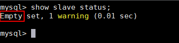

TDSQL在执行备份任务前，需开启对应版本权限，否则会导致备份或恢复失败。
操作步骤
- 登录赤兔管理台界面，在“实例管理”中选择实例，并进入“数据库管理 > 用户管理 > 创建用户”界面，创建供备份时使用的用户。
- 使用管理员用户（例如：tdsqlsys_agent），登录TDSQL数据库。
- 执行以下命令查找主节点。回显信息中包含“Empty”的节点，则为主节点。
show slave status

- 登录到主节点，执行以下命令为用户开启相应版本权限。
GRANT BACKUP_ADMIN, PROCESS, RELOAD, SELECT, LOCK TABLES, SUPER ON *.* TO '1中创建的用户名'@%';